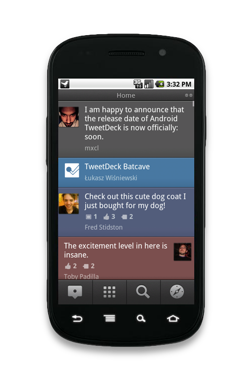
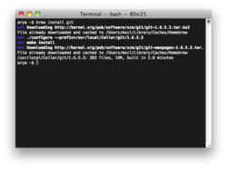
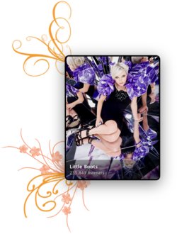
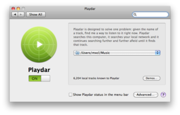

| Max Howell | Developer Designer Splendid Chap |
Android TweetDeck
We innovated in a stagnant market and created the first true social dashboard. Our blended columns approach allows people to digest updates from multiple real time services in the same app effectively for the first time. Our foursquare integration was hailed as top-notch by the founder of foursquare. Within nine months, Android TweetDeck users were already sending 1.2 million updates a day. In April 2011 it was nominated for a Webby. As lead I was integral to the design, production and development of this state of the art product.
Homebrew
There has never been a package manager designed for developers. So I built one. It’s now the most forked project on GitHub, and considered an indispensable tool by most Mac users.
Audioscrobbler.app
I led the development of Last.fm’s Windows, Mac, Linux, iPhone, Android and Blackberry apps. After leaving, I built the scrobbling solution I’d always wanted. Minimal, flexible and efficient, yet still pretty.
Playdar
Playdar is the invention of Richard Jones, a product that could change the way music is consumed on the Internet. I designed and developed the PreferencePane as well contributed to the core.
Boffin
An experimental project to give Last.fm users tag radio for their local music collections. Boffin is famous for its installation sequence, a feature that was my design. We distributed Boffin on Windows, Mac and Linux.